Immersive 3-D visualisation of AMR data
This page is also an executable Jupyter notebook — open / download immersive.ipynb. The notebooks run end-to-end and double as part of Mera's test suite.
projection is orthographic (parallel rays). Immersive rendering puts a camera at a point and shoots rays outward — perspective fly-ins, 360° panoramas, fisheye/dome masters, multi-tracer composites, isosurfaces — marching the AMR octree directly (no uniform-grid resample), so cost scales with the data, not the bounding box.
This notebook is a ladder: each rung shows a result first, then the one parameter that produced it, then builds toward quantitative, publication-grade maps (column density, mock emission, kinematics).
Performance. Renders are multithreaded — use the 8-thread Julia kernel (Threads.nthreads() below should be > 1). For a huge box: subregion before amr_volume, preview with smooth=false/coarse pxsize, final frame with smooth=true, aa=2. show_progress=true shows a bar.
using Mera, CairoMakie
CairoMakie.activate!()
println("threads = ", Threads.nthreads(), " (use the 8-thread kernel for fast renders)")*__ __ _______ ______ _______
| |_| | | _ | | _ |
| | ___| | || | |_| |
| | |___| |_||_| |
| | ___| __ | |
| ||_|| | |___| | | | _ |
|_| |_|_______|___| |_|__| |__|
Mera v1.8.0
threads = 8
(use the 8-thread kernel for fast renders)1 · Load, and the minimal pipeline
Five lines: load gas → index it → place a camera → render → show. Zero tuning parameters. Camera positions are code units; boxcenter/boxspan make them box-relative (eye(fx,fy,fz)), so the same recipe frames any box size.
The
eyehelper.eye(fx,fy,fz) = bc .+ boxspan(vol).*(fx,fy,fz)places the camera relative to the box:fx,fy,fzare fractions of the box size measured from the centrebc. Soeye(0.3,0.2,0.24)sits 0.3·boxlen right, 0.2 up-y, 0.24 up-z of centre — the same framing on any sim, no hard-coded code units. Avoid exact axis values likeeye(0,0,0.6)(straight down a grid axis): that lines every ray up with the cell grid and makes concentric-ring / lattice aliasing — keep a small lateral offset, e.g.eye(0.12,0.08,0.6).
base = get(ENV, "MERA_TEST_DATA", "/Volumes/FASTStorage/Simulations/AVALONpaper")
path = joinpath(base, "AV05CDhr/mera_v2/")
info = infodata(390, path, verbose=false)
gas = loaddata(390, path, :hydro, verbose=false)
# Big & slow? Zoom first (also lets finer pxsize render fast):
# MEMORY: a full deep box is heavy — gas + vol for a 167M-cell run is ~10+ GB; if you hit OOM /
# a kernel restart, zoom FIRST (uncomment) so neither data nor index is ever held at full size:
# gas = subregion(gas, :cylinder; center=[:boxcenter], radius=15., height=4., direction=:z, range_unit=:kpc)
vol = amr_volume(gas, :rho, :nH)
bc = boxcenter(vol)
eye(fx,fy,fz) = bc .+ boxspan(vol) .* (fx,fy,fz) # box-relative camera offset → works on any boxlen
println("boxlen=", vol.boxlen, " nleaf=", vol.nleaf)
println("nH range (log10): ", round.(log10.(extrema(filter(>(0), getvar(gas,:rho,:nH)))), digits=2))
println("T range (log10): ", round.(log10.(extrema(filter(>(0), getvar(gas,:T,:K)))), digits=2))amr_volume: 166991609 leaves, levels 6–13, boxlen 48.0 [code] (no uniform grid — native AMR marching)
┌ Warning: amr_volume indexed 166991609 leaves (~6.7 GB of index, lookups descend 8 levels). For a big box, `subregion(data, …)` before amr_volume indexes only the zoom region — far less RAM and much faster.
└ @ Mera ~/code-github/Mera.jl/src/functions/immersive.jl:122
boxlen=48.0 nleaf=166991609
nH range (log10):
(-6.53, 3.91)
T range (log10):
(1.04, 8.74)# the whole pipeline, no parameters:
img = render_view(vol, perspective_camera(eye(0.3,0.2,0.24), bc; fov_deg=55); mode=:max, aa=2)
view_figure(img; colormap=:inferno)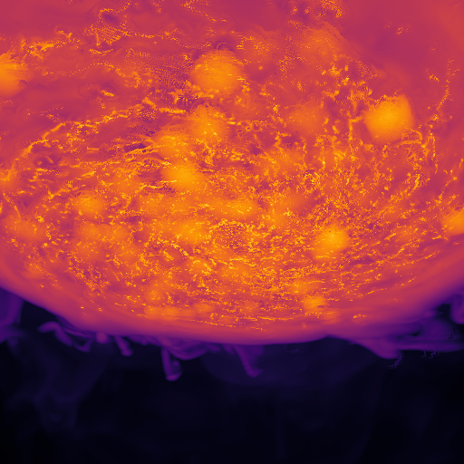
2 · Render modes — what gets accumulated along each ray
| mode | does | use for |
|---|---|---|
:max | brightest sample (MIP) | crisp clumps/filaments; hides the diffuse halo |
:emission | ∫ jᵖᵒʷᵉʳ dl (optically thin) | diffuse glow; reveals the coarse halo |
:rt | emission + self-absorption (kappa) | suppress the bright core / dust-lane look |
:sum | ∫ value dl (column) | quantitative columns (≡ :emission at power=1) |
:iso | gradient-shaded surface(s) at level | 3-D shape of a density/temperature surface |
cam = perspective_camera(eye(0.3,0.2,0.24), bc; fov_deg=55); px=[0.4,:kpc]
tiles = [as_image(render_view(vol, cam; pxsize=px, mode=m, aa=2); colormap=:inferno) for m in (:max,:emission,:rt,:sum)]
vcat(hcat(tiles[1],tiles[2]), hcat(tiles[3],tiles[4])) # :max | :emission / :rt | :sum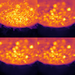
3 · Reconstruction (smooth=) — and what it costs
false = nearest-leaf (blocky, fast), true = cross-level trilinear (de-blocked, conservative — default), :kernel = cubic B-spline (softest, but cosmetic & non-conservative, ~8× slower — beauty frames only). The timings make the trade-off concrete.
Speckle / dots? That's aliasing — at
aa=1each pixel is one ray, so a clumpy field samples unevenly. Raiseaa=2–3(supersampling) to smooth it;smooth=:kerneladditionally softens coarse-cell facets in the integrating modes. Useaa=1only for quick previews.
render_view(vol, cam; pxsize=px, mode=:max, smooth=false) # warm up
for s in (false, true, :kernel)
t = @elapsed render_view(vol, cam; pxsize=px, mode=:max, smooth=s)
println(rpad("smooth=$s", 16), round(t, digits=2), " s")
end
hcat(as_image(render_view(vol,cam;pxsize=px,mode=:max,smooth=false); colormap=:inferno),
as_image(render_view(vol,cam;pxsize=px,mode=:max,smooth=true); colormap=:inferno),
as_image(render_view(vol,cam;pxsize=px,mode=:max,smooth=:kernel);colormap=:inferno))smooth=false 0.06 s
smooth=true 0.22 s
smooth=kernel 1.24 s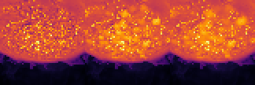
4 · The colour range (transfer function)
render_view returns the raw field; you set how it maps to colour when you display it. vmin/vmax fix the range (in log10 units when logscale=true, default) — values outside clip. Raise vmin to hide a faint background; lower vmax to bring out faint structure. (For emission, power>1 compresses toward bright peaks at the ray-cast stage.)
em = render_view(vol, cam; pxsize=px, mode=:emission, aa=2)
hcat(view_figure(em; colormap=:inferno), # auto range
view_figure(em; colormap=:inferno, vmin=0.5, vmax=3.0)) # fixed log10 range (clips)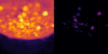
5 · The coarse-halo artefact — shown, then fixed
A 360° equirectangular view from the box centre integrates radially through the low-resolution halo, so :emission/:rt can look blocky above the disk (the halo's real AMR cell structure, stretched by the log display). :max hides it; smooth=:kernel softens the facets; a subregion removes the halo from the line of sight. Not a bug — it's the data's resolution. Use aa≥2 (jittered) for clean panoramas.
Rings / lattice dots? If the camera sits exactly on a grid axis (e.g. straight down z, or at the exact box centre), rays related by that symmetry cross the axis-aligned cells identically → concentric-ring or dotted aliasing that supersampling/jitter can't remove. Offset the camera slightly off-axis (a small lateral term in
eye) and it disappears.
ec = equirect_camera(bc .+ (0.37, 0.21, 0.13)) # nudge off the exact (grid-aligned) centre → fewer lattice dots
hcat0 = view_figure(render_view(vol, ec; pxsize=[0.3,:kpc], mode=:emission, aa=2); colormap=:inferno)
hcatk = view_figure(render_view(vol, ec; pxsize=[0.3,:kpc], mode=:emission, aa=2, smooth=:kernel); colormap=:inferno)
vcat(hcat0, hcatk) # top: trilinear (halo facets) bottom: kernel (softened)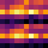
6 · Cameras & physical pixels
perspective_camera (navigation/fly-in), equirect_camera (360° survey), fisheye_camera (dome). pxsize=[v,:kpc] sets the pixel size at the box centre (overrides res) → consistent physical resolution across zooms, exactly like projection. Smaller pxsize = more pixels = larger image (slower).
# same `res` → equal heights so hcat works (pxsize also works, but gives view-dependent sizes)
p = view_figure(render_view(vol, perspective_camera(eye(0.28,0.18,0.22), bc; fov_deg=55);
res=420, mode=:max, aa=2); colormap=:inferno)
f = view_figure(render_view(vol, fisheye_camera(eye(0,0,0.4), bc; fov_deg=180);
res=420, mode=:max, aa=2); colormap=:magma)
hcat(p, f)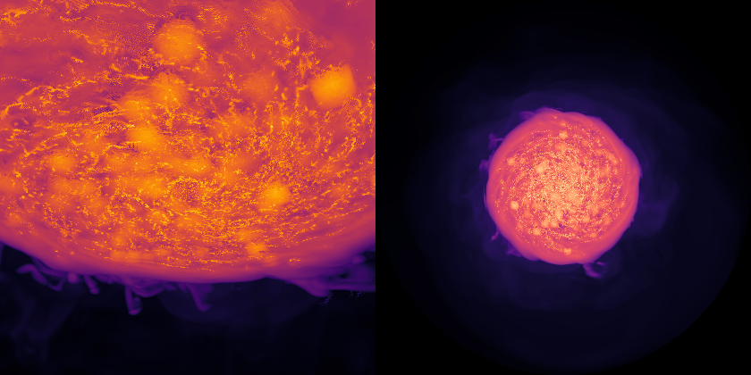
Planning the view — coordinate overlay
overlay_grid(img, cam; vol, box, axes, graticule) draws the view's coordinate system onto a render so you can plan camera placement/orientation: the simulation bounding-box wireframe, the world x/y/z axes (red/green/blue, from the origin), and a graticule (lon/lat meridians + parallels) for equirect/fisheye. Lines are projected through the camera, so they curve correctly in the panoramas.
# box wireframe + world axes on a perspective view (planning aid)
ocam = perspective_camera(eye(0.45,0.3,0.35), bc; fov_deg=50)
img = render_view(vol, ocam; pxsize=[0.12,:kpc], mode=:max, aa=2)
scene_figure(overlay_grid(img, ocam; vol=vol, box=true, axes=true, color=(1,1,1), alpha=0.7))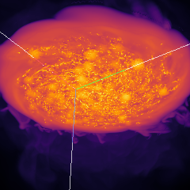
# lon/lat graticule on a 360° panorama (+ the box outline)
eg = equirect_camera(bc .+ (0.4,0.2,0.1))
pan = render_view(vol, eg; pxsize=[0.25,:kpc], mode=:emission, aa=2)
scene_figure(overlay_grid(pan, eg; vol=vol, graticule=true, graticule_deg=30, box=true, axes=false,
color=(0.6,1.0,0.6), alpha=0.6))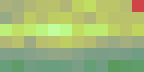
7 · subregion is the zoom and speed lever
res/pxsize set image size; subregion sets how much data each ray traverses. Indexing only the region you'll view cuts both RAM and time. Rough cost: res² · steps · leaf_cost · (trilinear? 8 : 1) / nthreads.
# MEMORY: a subregion copies its cells; for a galaxy most cells live in the disk, so a *large* cylinder
# barely shrinks the data and — built on top of the full `vol` (~7 GB here) — can exhaust RAM and kill the
# kernel. Keep the zoom SMALL and GC temporaries. (If RAM is tight, restart and subregion `gas` in cell 1.)
sub = subregion(gas, :cylinder; center=[:boxcenter], radius=5., height=1.5, direction=:z, range_unit=:kpc)
volS = amr_volume(sub, :rho, :nH; verbose=false)
println("full nleaf = ", vol.nleaf, " cylinder nleaf = ", volS.nleaf) # far fewer cells = less RAM, faster
sub = nothing; GC.gc()
view_figure(render_view(volS, perspective_camera(eye(0.25,0.18,0.22), bc; fov_deg=50);
pxsize=[0.04,:kpc], mode=:max, aa=2); colormap=:inferno)[Mera] Tip: regions also work as value types with EXACT edge-cell splitting (exact getvar :mass/:volume/msum), composable with ∩ ∪ \ !:
subregion(data, Cylinder(5.0, 1.5; center=[:boxcenter], range_unit=:kpc))
(the symbol form above still works; pass split=false for classic whole cells. Shown once per session — see ?subregion.)
[Mera]: 2026-07-02T10:53:14.986
center: [0.5, 0.5, 0.5] ==> [24.0 [kpc] :: 24.0 [kpc] :: 24.0 [kpc]]
domain:
xmin::xmax: 0.3958333 :: 0.6041667 ==> 19.0 [kpc] :: 29.0 [kpc]
ymin::ymax: 0.3958333 :: 0.6041667 ==> 19.0 [kpc] :: 29.0 [kpc]
zmin::zmax: 0.46875 :: 0.53125 ==> 22.5 [kpc] :: 25.5 [kpc]
Radius: 5.0 [kpc]
Height: 1.5 [kpc]
Memory used for data table :
4.217771562747657 GB
-------------------------------------------------------
┌ Warning: amr_volume indexed 51463597 leaves (~2.1 GB of index, lookups descend 5 levels). For a big box, `subregion(data, …)` before amr_volume indexes only the zoom region — far less RAM and much faster.
└ @ Mera ~/code-github/Mera.jl/src/functions/immersive.jl:122
full nleaf = 166991609 cylinder nleaf = 51463597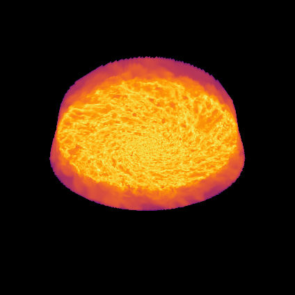
8 · render_scene — the multi-tracer layer cake
Composite layers, each with its own colormap + opacity. Build it up: density → colour it by temperature (opacity from ρ, hue from T) → add self-absorption (absorb_by) → add stars (points_channel). opacity/kappa/absorb_* are normalized visual dials (not physical optical depth). Stars need the particle files; if unavailable the cell skips them.
shade=for form/depth. Flat emission-absorption looks like colour patches;shade(0–1) lights each gas sample by its density gradient (ParaView's 'Shade') so clumps gain 3-D relief. Pair with a calmer colormap +gamma>1to avoid an over-saturated look.
scam = perspective_camera(eye(0.34,0.10,0.16), bc; fov_deg=50); spx=[0.07,:kpc]
# multi-tracer scene builds several full-box indices; on 32 GB build them on a subregion
# (same boxlen/center, so the full-box camera is unchanged), then free them.
g21 = subregion(gas, :cylinder; center=[:boxcenter], radius=8., height=2.5, direction=:z, range_unit=:kpc, verbose=false)
gch = field_channel(g21, :rho, :nH; color_by=:T, color_unit=:K, colormap=:RdYlBu, reverse=true,
vmin=-0.5, vmax=2.3, color_vmin=3.5, color_vmax=6.5, opacity=12, gamma=1.4)
stars = try
parts = getparticles(info, verbose=false, show_progress=false) # or loaddata(390, path, :particles)
age = getvar(parts, :age, :Myr)
[points_channel(parts; filter=age.<50, weight=:mass, color=(0.4,0.9,1.0), size=1.0, opacity=0.5), # young = blue
points_channel(parts; filter=age.>800, weight=:mass, color=(1.0,0.8,0.4), size=0.7, opacity=0.12)] # old = amber
catch e; @warn "particles unavailable — skipping stars ($(typeof(e)))"; []
end
fig21 = scene_figure(render_scene([gch; stars], scam; pxsize=spx, aa=2, exposure=2.4, saturation=1.4,
shade=0.8, light=(-1,-0.5,1), show_progress=true))
gch = nothing; g21 = nothing; GC.gc()
fig21┌ Warning: amr_volume indexed 104570892 leaves (~4.2 GB of index, lookups descend 5 levels). For a big box, `subregion(data, …)` before amr_volume indexes only the zoom region — far less RAM and much faster.
└ @ Mera ~/code-github/Mera.jl/src/functions/immersive.jl:122
┌ Warning: amr_volume indexed 104570892 leaves (~4.2 GB of index, lookups descend 5 levels). For a big box, `subregion(data, …)` before amr_volume indexes only the zoom region — far less RAM and much faster.
└ @ Mera ~/code-github/Mera.jl/src/functions/immersive.jl:122
┌ Warning: particles unavailable — skipping stars (CompositeException)
└ @ Main In[12]:12
render_scene 100%|██████████████████████████████████████| Time: 0:01:26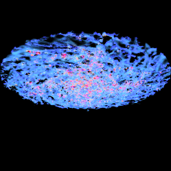
9 · Isosurfaces — physical value-surfaces
mode=:iso, level = the field's physical value (linear, in the volume's unit; any real). iso_alpha<1 makes shells translucent; pass a vector of levels for nested shells in one pass (depth-ordered).
icam = perspective_camera(eye(0.30,0.20,0.24), bc; fov_deg=55)
as_image(render_view(vol, icam; pxsize=[0.07,:kpc], mode=:iso, level=[0.1,1.0,10.0], iso_alpha=0.3, aa=2);
colormap=:bone, logscale=false)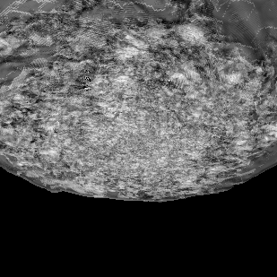
# each isosurface in its OWN colour (gradient-shaded shells + ambient occlusion for depth)
render_isosurfaces(vol, icam; pxsize=[0.07,:kpc], aa=2, ao=0.7,
levels=[0.1, 1.0, 10.0], colors=[(0.25,0.5,1.0), (0.3,1.0,0.4), (1.0,0.45,0.2)], iso_alpha=0.35)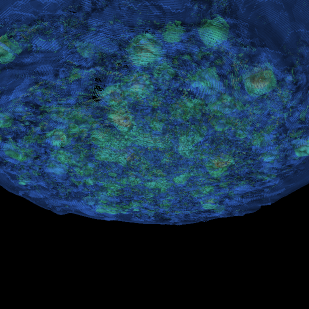
10 · Quantitative science — numbers you can compare to data
These return physical maps, not just pretty pictures.
Read the values:
view_colorbar(map; vmin, vmax, logscale, colormap, label)shows a scalar map with an aligned, labelled colorbar (andfilename=to save). Use it instead ofview_figurewhenever the numbers matter (column density, velocity, dispersion).
Column density N_H [cm⁻²]: column_map = ∫ nH dl with the path length in cm (via the volume's scale).
NH = column_map(vol, perspective_camera(eye(0.12,0.08,0.62), bc; fov_deg=22); pxsize=[0.05,:kpc], aa=2) # OFF-axis: no rings # ~face-on
println("log10 N_H range: ", round.(extrema(filter(isfinite, log10.(NH[NH.>0]))), digits=2))
view_colorbar(NH; colormap=:magma, vmin=19.5, vmax=22.5, label="log10 N_H [cm^-2]")log10 N_H range: (
19.71, 23.11)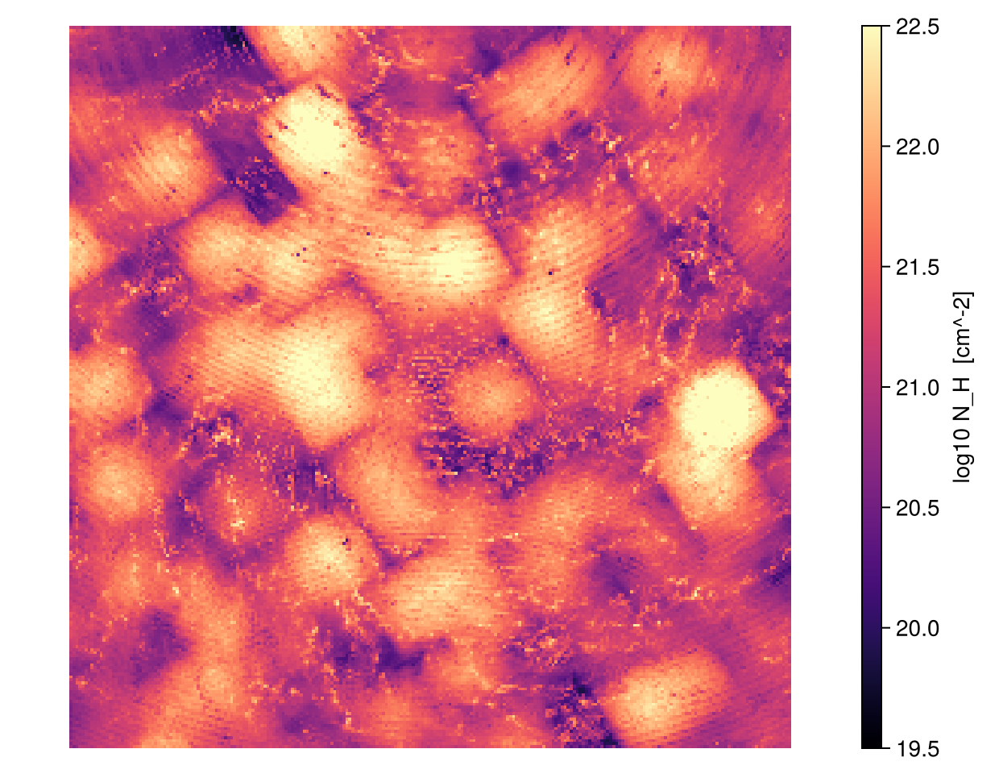

Mock emission from a derived emissivity (here thermal bremsstrahlung ∝ n²√T), rendered as a :sum surface brightness.
xray = derived_volume(gas, (n,T)->n^2*sqrt(T), [:rho,:T]; units=[:nH,:K], verbose=false)
figx = view_colorbar(render_view(xray, scam; pxsize=[0.06,:kpc], mode=:sum, aa=2); colormap=:inferno,
label="integral n^2 sqrt(T) dl (arb. bremsstrahlung units)")
xray = nothing; GC.gc() # free the extra full-box index before the next cell
figx┌ Warning: amr_volume indexed 166991609 leaves (~6.7 GB of index, lookups descend 8 levels). For a big box, `subregion(data, …)` before amr_volume indexes only the zoom region — far less RAM and much faster.
└ @ Mera ~/code-github/Mera.jl/src/functions/immersive.jl:122
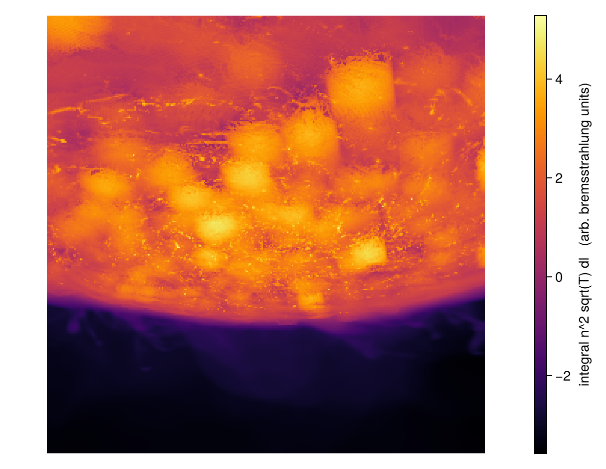
Line-of-sight kinematics (moment maps), evaluated per ray so they're correct for perspective. moment1 = mean v∥ (+ = receding); colour it with a diverging map. Velocity volumes need signed=true.
# moment maps need vol+vx+vy+vz simultaneously — 4 full 167M indices would exceed 32 GB RAM (-> swap).
# Build them together on a subregion (the rotating disk); same boxlen/center, so the camera is unchanged.
msub = subregion(gas, :cylinder; center=[:boxcenter], radius=6., height=2., direction=:z, range_unit=:kpc, verbose=false)
volm = amr_volume(msub, :rho, :nH; verbose=false)
vx = amr_volume(msub, :vx, :km_s; signed=true, verbose=false)
vy = amr_volume(msub, :vy, :km_s; signed=true, verbose=false)
vz = amr_volume(msub, :vz, :km_s; signed=true, verbose=false)
msub = nothing; GC.gc()
m0, m1, m2 = moment_maps(volm, vx,vy,vz, perspective_camera(eye(0.05,0.55,0.12), bc; fov_deg=30); pxsize=[0.07,:kpc], aa=2)
vx = vy = vz = volm = nothing; GC.gc()
view_colorbar(m1; colormap=:RdBu, reverse=true, logscale=false, vmin=-200, vmax=200,
label="v_los [km/s] (+receding = red)") # rotation curve, readable in km/s
# m0 = intensity (integral rho dl), m2 = dispersion: view_colorbar(m2; logscale=false, colormap=:viridis, label="sigma_los [km/s]")┌ Warning: amr_volume indexed 72312794 leaves (~2.9 GB of index, lookups descend 5 levels). For a big box, `subregion(data, …)` before amr_volume indexes only the zoom region — far less RAM and much faster.
└ @ Mera ~/code-github/Mera.jl/src/functions/immersive.jl:122
┌ Warning: amr_volume indexed 72312794 leaves (~2.9 GB of index, lookups descend 5 levels). For a big box, `subregion(data, …)` before amr_volume indexes only the zoom region — far less RAM and much faster.
└ @ Mera ~/code-github/Mera.jl/src/functions/immersive.jl:122
┌ Warning: amr_volume indexed 72312794 leaves (~2.9 GB of index, lookups descend 5 levels). For a big box, `subregion(data, …)` before amr_volume indexes only the zoom region — far less RAM and much faster.
└ @ Mera ~/code-github/Mera.jl/src/functions/immersive.jl:122
┌ Warning: amr_volume indexed 72312794 leaves (~2.9 GB of index, lookups descend 5 levels). For a big box, `subregion(data, …)` before amr_volume indexes only the zoom region — far less RAM and much faster.
└ @ Mera ~/code-github/Mera.jl/src/functions/immersive.jl:122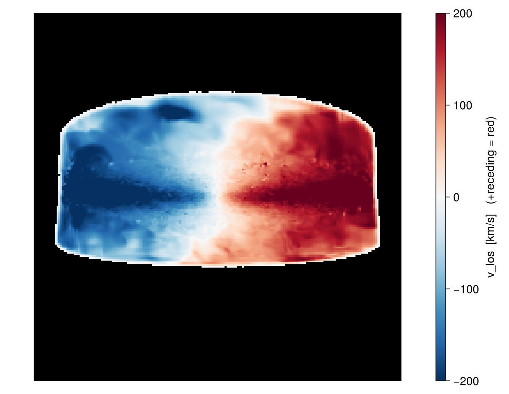

Inflow / outflow in one image: density (opacity) coloured by vertical velocity vz (the galactic fountain — up vs down out of the disk). Signed colour field + diverging map + symmetric range.
# density (opacity) coloured by vertical velocity — build the channel on a subregion (memory-safe on 32 GB)
g33 = subregion(gas, :cylinder; center=[:boxcenter], radius=8., height=2.5, direction=:z, range_unit=:kpc, verbose=false)
wind = field_channel(g33, :rho, :nH; color_by=:vz, color_unit=:km_s, color_signed=true,
color_logscale=false, colormap=:RdBu, color_vmin=-80, color_vmax=80,
vmin=-1.0, vmax=2.0, opacity=6)
fig33 = scene_figure(render_scene([wind], perspective_camera(eye(0.05,0.5,0.1), bc; fov_deg=35);
pxsize=[0.08,:kpc], aa=2, exposure=1.8))
wind = nothing; g33 = nothing; GC.gc()
fig33┌ Warning: amr_volume indexed 104570892 leaves (~4.2 GB of index, lookups descend 5 levels). For a big box, `subregion(data, …)` before amr_volume indexes only the zoom region — far less RAM and much faster.
└ @ Mera ~/code-github/Mera.jl/src/functions/immersive.jl:122
┌ Warning: amr_volume indexed 104570892 leaves (~4.2 GB of index, lookups descend 5 levels). For a big box, `subregion(data, …)` before amr_volume indexes only the zoom region — far less RAM and much faster.
└ @ Mera ~/code-github/Mera.jl/src/functions/immersive.jl:122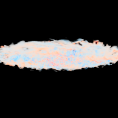
11 · Animation
orbit_keyframes → flythrough_montage (a still contact sheet, shown here) → flythrough (mp4; needs CairoMakie). flythrough also accepts a vector of channels for ρ+T+stars movies.
kf = orbit_keyframes(bc, 0.45*vol.boxlen; inclination=35, n=10)
flythrough_montage(vol, :perspective, kf; nframes=8, cols=4, pxsize=[0.3,:kpc], mode=:max)
# movie: flythrough(vol, :perspective, kf; nframes=96, pxsize=[0.15,:kpc], filename="orbit.mp4")
# multi-tracer: flythrough([gch; stars], :perspective, kf; nframes=96, pxsize=[0.12,:kpc], filename="scene.mp4")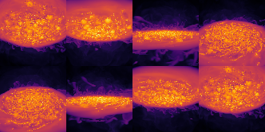
Interactive orbit (live, needs using GLMakie): interactive_view(vol; mode=:max) — or a scene: interactive_view([gch; stars]). Left-drag to orbit, scroll to zoom (coarse while moving, crisp on release).
Parameters & tuning — the dials
| Want to change… | Parameter | Where |
|---|---|---|
| Viewpoint / zoom | pos, target, fov_deg | perspective_camera |
| View type | perspective / equirect (360°) / fisheye (dome) | camera constructor |
| Resolution | pxsize ([v,:unit], overrides res) | render_view/render_scene |
| Smoothness / AA | smooth (false/true/:kernel), aa, jitter | render |
| Accumulation | mode (:max/:emission/:rt/:sum/:iso) | render_view |
| Isosurface | mode=:iso, level (scalar or vector), iso_alpha, lighting | render_view |
| Displayed colour range | vmin/vmax (log10), colormap, logscale | view_figure/as_image/save_view |
| Colour by 2nd field | color_by, color_vmin/vmax, color_signed | field_channel |
| Absorption field | absorb_by, absorb_vmin/vmax | field_channel |
| Look | opacity, gamma, exposure, saturation | field_channel/render_scene |
| Stars | weight, filter, color, size, opacity | points_channel |
| Quantitative | column_map (NH), `derivedvolume(mock emission),moment_maps` (kinematics) | — |
| Speed | 8-thread kernel · subregion · occupancy (auto, set_occupancy) · smooth=false/coarse pxsize previews | — |
| Save | save_view (scalar) · save_scene (RGB) · save_figure (either) | — |
Concepts & references: emission–absorption volume rendering (Max 1995); front-to-back compositing (Porter & Duff 1984); transfer functions / coloured-density (Levoy 1988); trilinear reconstruction (Engel et al. 2006); ACES tone-map (Narkowicz 2016); equirectangular (Snyder 1987); fisheye (Bourke 2004); Catmull–Rom paths (1974).